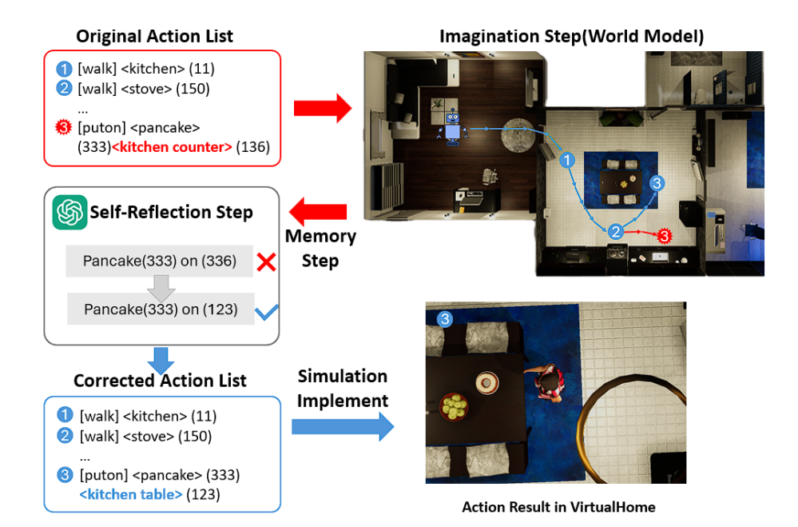

Weixing Guo
I am Weixing Guo, a Master's student in Mechanical Engineering at UC Berkeley, specializing in control theory, robotics, and autonomous systems.
My research focuses on trajectory optimization, reinforcement learning control, and LLM-based task reasoning in embodied agents.
I have led and co-authored several projects involving UAVs, collision avoidance, and bio-inspired robots, with publications under review at NeurIPS and ICRA.
My goal is to advance intelligent autonomy through the integration of modern control and machine learning.
Projects
Task-Oriented Grasp Detection Methods for Robots Based on DL
Developed a deep learning-based grasp detection system for robotic manipulation tasks.
 Learn More →
Learn More →
Data Transmission and Path Planning for UAV in Precise Agriculture
Implemented efficient data transmission and path planning algorithms for agricultural UAVs.
 Learn More →
Learn More →
RADI: LLMs as World Models for Robotics Action Decomposition and Imagination
Designed and developed a novel robotic system for advanced industrial applications.
 Learn More →Biomimetic Earwig Robot with Multi-Stable Wings and Stiff-Flexibel Tail
Created a bio-inspired robot mimicking earwig's unique wing and tail mechanisms.
 Learn More →
Learn More →
Collision Avoidance Algorithm Based on Buffered Vonoroi Cell
Developed an efficient collision avoidance system using buffered Voronoi cells for path planning.
 Learn More →
Learn More →